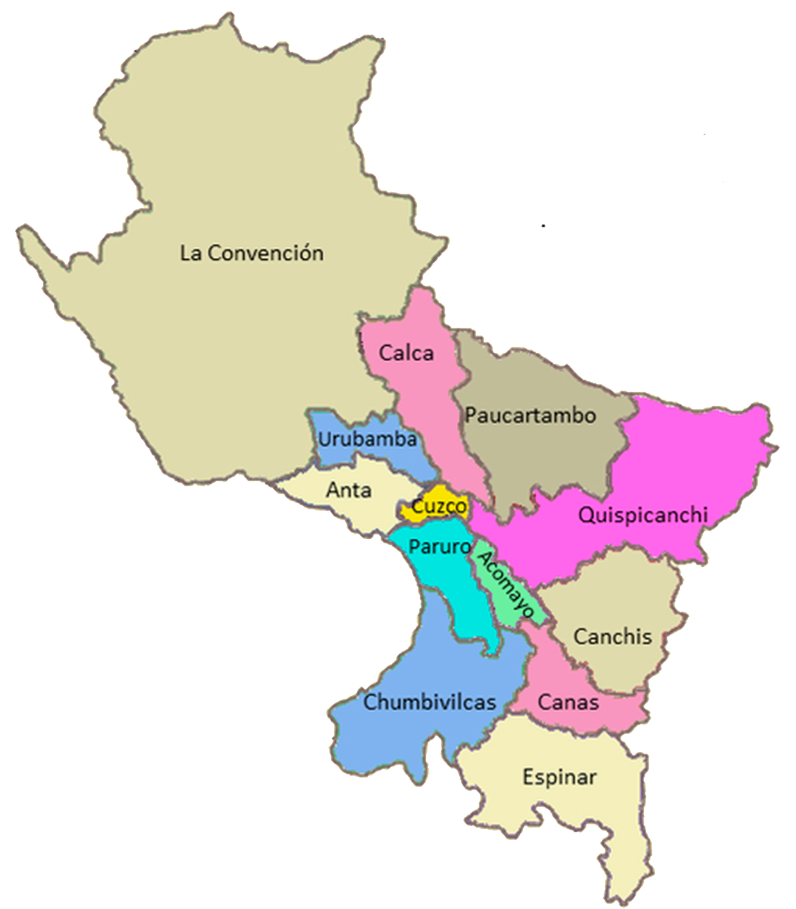

Cuzco
Templo del Sol
Escudo de Cuzco

Ubicación
Escudo de Cuzco
Ubicación
Autoridades Principales


Un Poco de Historia
Cuzco fue la capital y sede de Gobierno del Reino de los Incas y lo siguió siendo al iniciarse la época imperial, convirtiéndose en la ciudad más importante de los Andes y de América del Sur. Este centralismo le dio auge y se convirtió en el principal foco cultural y eje del culto religioso.
Se atribuye al gobernante Pachacútec el haber hecho del Cuzco un centro espiritual y político. Pachacútec llegó al poder en 1438, y él y su hijo Túpac Yupanqui dedicaron cinco décadas a la organización y conciliación de los diferentes grupos tribales bajo su dominio, entre ellos los lupacas y los collas. Durante el periodo de Pachacútec y Túpac Yupanqui, el dominio de Cuzco llegó hasta Quito, al norte, y hasta el río Maule, al sur, integrando culturalmente a los habitantes de 4500 km de cadenas montañosas.
También se cree que el diseño original de la ciudad es obra de Pachacútec. El plano del Cuzco antiguo tiene forma de puma delineado, con la plaza central Haucaypata en la posición que ocuparía el pecho del animal. La cabeza del felino estaría ubicada en la colina donde está la fortaleza de Sacsayhuamán.
La ciudad de Cuzco fue diseñada como la sede del poder y su organización interna correspondía a una tradicional división urbana Incaica, se encontraba ubicada en un punto central estratégico del imperio, en cuya centralidad convergen los cuatro caminos que unían los suyos.
¿Cuántos habitantes tiene Cusco 2020?
El departamento de Cusco cuenta con una población de 1,316,729 habitantes , donde el 9.6% representa la población adulta mayor (126,379).
Provincias
| Provincias del departamento de Cuzco | ||||||
|---|---|---|---|---|---|---|
| Ubigeo | Provincia | Capital | Distritos | Superficie | Poblacion | Altitud |
| 0801 | Cuzco | Cuzco | 8 | 617.00 | 447 588 | 3414 |
| 0802 | Acomayo | Acomayo | 7 | 948.22 | 22 940 | 3221 |
| 0803 | Anta | Anta | 9 | 1 876.12 | 56 206 | 3 345 |
| 0804 | Calca | Calca | 8 | 4 414.49 | 63 155 | 2 905 |
| 0805 | Canas | Yanaoca | 8 | 2 103.76 | 32 484 | 3 910 |
| 0806 | Canchis | Sicuani | 8 | 3 999.27 | 95 774 | 3 546 |
| 0807 | Chumbivilcas | Santo Tomás | 8 | 5 371.08 | 66 410 | 3 678 |
| 0808 | Espinar | Yauri | 8 | 5 311.09 | 57 582 | 3 924 |
| 0809 | La Convención | Quillabamba | 14 | 30 061.82 | 147 148 | 1 063 |
| 0810 | Paruro | Paruro | 9 | 1 984.42 | 25 567 | 3 068 |
| 0811 | Paucartambo | Paucartambo | 6 | 6 295.01 | 42 504 | 3 005 |
| 0812 | Quispicanchi | Urcos | 12 | 7 564.79 | 87 430 | 3 158 |
| 0813 | Urubamba | Urubamba | 7 | 1 439.43 | 60 739 | 2 869 |
División Política de Cuzco
El departamento del Cusco abarca 71.891.97 km2 y se encuentra dividido políticamente en 13 provincias (Acomayo, Anta, Calca, Canas, Canchis, Chumbivilcas, Quispicanchis y Urubamba).
Paraíso Incaico
En Cusco, cada rincón cuenta una historia y cada historia es cautivante, mística y acogedora. ¿Qué te parecería caminar por calles con estos nombres: Ataúd, Siete Culebras, Purgatorio? Calles donde el tiempo parece haberse detenido, donde cada rincón es una historia, donde las piedras se mantienen vivas porque están intactas.
Cusco ha sido testigo del ingreso de los españoles y hoy conserva esa magia ancestral que cautiva a miles de visitantes que se vuelven parte de esta historia viva.
Cusco, declarada la capital histórica del Perú, en el ombligo del mundo... ¡Imperdible!
Comidas Típicas


Zonas Turisticas


Fiestas importante de Cuzco
Los 12 platos de Semana SantaEste día los cusqueños ayunan y en las casas se despiertan temprano para ir a los mercados a comprar insumos locales. Con estos preparan 12 platos típicos para compartir con la familia: usualmente seis dulces y seis salados, todos ellos sin carne roja.
 La fiesta del Inti Raymi
La fiesta del Inti Raymi
Su nombre significa “Fiesta del Sol” y se celebra todos los solsticios de invierno. La festividad incluye la escenificación de todo un ritual, donde actores se visten como los incas para rendir tributo al dios Sol.

Este mes las parejas celebran su amor al estilo andino , se trata de una especie de renovación de votos para los casados y un ritual previo a la boda religiosa cristiana, para parejas que aún no han contraído matrimonio.

Danza Típica de Cuzco
Esta danza se realiza en honor a la pascua de reyes y a la navidad pues en la época del virreinato se les daba libertad a los esclavos desde el 24 de diciembre hasta el 6 de enero.

Esta danza se caracteriza por tener un toque pícaro y elegante. Tanto hombres como mujeres coquetean al compás de la música.

La danza tradicional del Cusco significa “flor o pelo de maíz”. Durante dicho baile, los varones pelean con ayuda de sus warakas u hondas con el propósito de agradecer a la pachamama por la excelente producción de maíz que se dio en la región.

Flora
La flora va distribuida desde los 2,800 m.s.n.m. hasta los 4,215 m.s.n.m. Esta variedad de pisos altitudinales, influyen no sólo en la vegetación, sino también en los climas. Se consideran nueve zonas de vida a los que se les ha denominado como bosque húmedo subtropical (2,000 m.s.n.m.), donde abundan los árboles altos, arbustos y trepadoras


![planta sarcostema]()


Fauna
Este medio ambiente, boscoso, húmedo y caluroso, constantemente cubierto por niebla y lluvia, no era lugar propicio para la vida de los domesticados camélidos andinos, pertenecientes a climas secos y más bien fríos.
Pato andino, ave sumamente aerodinámica – nunca deja los ríos torrentosos de las montañas que habita, las cuales pocos patos son capaces de dominar debido a su velocidad; el pato azul que habita Nueva Zelanda es su contraparte ecológica más cercana.

Cusco es uno de los departamentos privilegiados en el Perú con la presencia de esta especie, pero, lamentablemente por el crecimiento de la población y las malas prácticas con el cuidado del medio ambiente, el Oso de Anteojos ha decidido alejarse de la población, para garantizar su supervivencia.

El Gallito de las Rocas es un ave nativo de la región andina – amazónica del noroeste y oeste de América del Sur, científicamente esta ave es conocida como rupícola peruviana y mide aproximadamente 35 centímetros.

Esta ave rapaz más grande del mundo para los incas tuvo un gran significado. Los pobladores de antes, solían considerar al Cóndor o Kuntur, como el “mensajero de los dioses”. Porque, el ave podía comunicar a dos mundos, el terrenal (Kay pacha) y el religioso (Hanan Pacha).

El puma andino, es un animal silencio, no ruge se comunica a través de ronroneos y es capaz de saltar hasta 6 metros de distancia. Es muy ágil e inteligente cuando se trata de capturar su presa. Un dato curioso, es que los pumas recién nacidos son ciegos y tienen manchas en la piel, en el transcurso de su desarrollo van aclarando su visibilidad.

No podemos dejar de lado a las llamas, que albergan este magnífico santuario, las llamas pueden vivir cómodamente en lugares de altas altitudes.

Actividad Turistica
La técnica constructiva inca, era completamente diferente a todo lo encontrado en otras latitudes del mundo, por lo que es única en sus diversos centros arqueológicos. Grandes piedras, algunas de más de cien toneladas, fueron acarreadas desde las canteras a más de 60 kilómetros para su construcción. La orientación de sus puertas y ventanas, así como lo espectacular de su construcción,son sólo algunos de los detalles que valorarán en este recorrido por estos centros arqueológicos.

Una ciudad,tan visitada como el Cusco, no podía carecer de museos. Estos, orientados a mostrar diversos aspectos de la cultura Pre-inca, inca, colonial y republicana, se distribuyen a lo largo de la ciudad.
El santuario animal de Ccochahuasi fue fundado el año 2007. Desde entonces alberga diferentes especies muchas de ellas en peligro crítico de extinción tal es el caso del CONDOR ANDINO.
La tirolesa o zipline es el descenso a velocidad sujetado a un cable de acero inclinado. Este deporte extremo se puede practicar en varios lugares del Cusco, especialmente en Valle Sagrado de los Incas.

Esta ruta de 4 días y 3 noches es considerada como una de las mejores 5 rutas de senderismo del mundo. Recorre paisajes andinos y de ceja de selva así como centros arqueológicos que culminan en la ciudadela inca de Machu Picchu.

Idioma
En el Perú se cuentan con 85 lenguas originarias, 48 de las cuales se encuentran vigentes, 2 están en proceso de recuperación por parte de los descendientes de sus respectivas comunidades lingüísticas y 35 se dejaron de hablar.
del ámbito de la región Cusco se hablan 8 lenguas originarias, siendo el quechua en la zona andina el de mayor cantidad de hablantes y en la zona amazónica las lenguas indígenas como: el matsiguenga, ashaninka, nahua, nanti, yine, kakinte y harakbut – wachiperi.